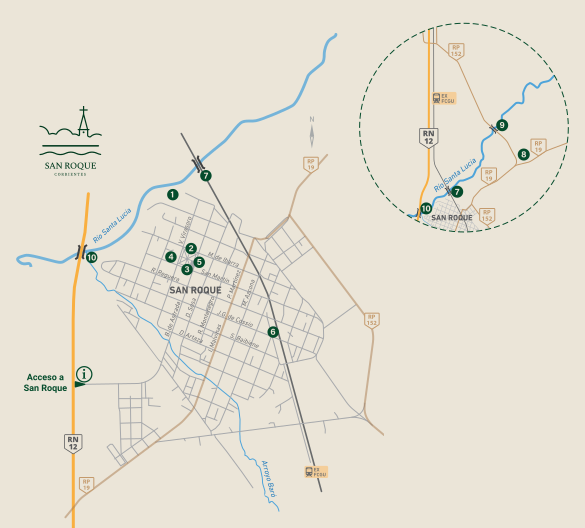

Mapa de San Roque y recorrido histórico
Tocá un número del mapa o una referencia para ubicar cada parada. El punto de informes está en el acceso a la ciudad, sobre la Ruta Nacional 12.

Referencias
- Paso de Blas
- Plaza Libertad
- Antigua ParroquiaMuseo Histórico Nacional
- Antigua Sede de Gobierno ProvincialMuseo Histórico Provincial
- Parroquia San Roque de Montpellier
- Estación Ferroviaria (FCGU)
- Puente Ferroviario
- Estancia El Carayá
- Puente CarreteroConocé su historia
- Parque Municipal y Puente Ruta 12
Punto de informes
La parroquia y el Museo de Arte Sacro
El Museo de Arte Sacro y Antigüedades Correntinas «Presbítero Ángel Esteban Romero» funciona en el antiguo templo, terminado en 1783 y declarado Monumento Histórico Nacional en 1968. Conserva imágenes que datan del año 1773 y piezas talladas en madera de cedro. Entre los objetos exhibidos se encuentran candeleros dorados, biblias antiguas y vestimentas de misa del Padre Romero, un precursor de la Iglesia que impulsó la creación del museo.
Las tres primeras fotos son de la Parroquia San Roque de Montpellier, el templo actual, que data de 1973.
Recorré los dos museos desde tu pantalla
Son dos edificios, cada uno con su propio recorrido. El Museo de Arte Sacro incluye una línea de tiempo desde 1773 hasta hoy.